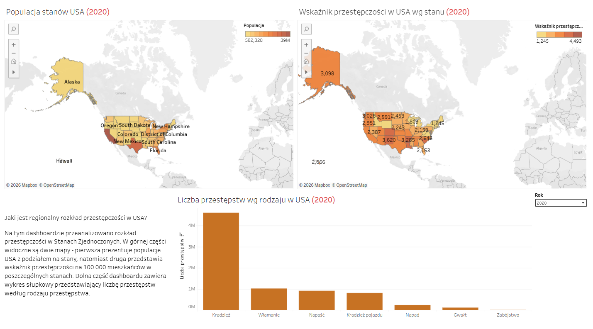

Przestępczość w USA: dashboard w Tableau
Interaktywne dashboardy pokazujące populację i wskaźnik przestępczości na 100 000 mieszkańców w stanach, strukturę przestępstw według rodzaju oraz prognozę liczby przestępstw na kolejne lata. [Dodaj 1-2 zdania o wnioskach, np. które stany odstają od reszty i dlaczego.]
Zobacz dashboard na Tableau Public